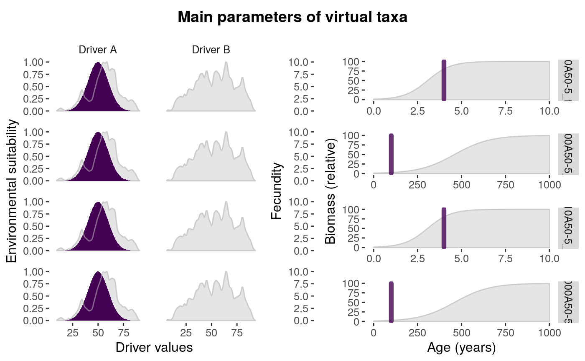

Plots the environmental niche, fecundity, growth curve, and maturity age, of each virtual taxa in a parameters dataframe for simulatePopulation, to help the user in making choices while adjusting them.
parametersCheck( parameters, species = "all", driver.A = NULL, driver.B = NULL, drivers = NULL, filename = NULL )
| parameters | the parameters dataframe. |
|---|---|
| species | if "all" or "ALL", all species in "parameters" are plotted. It also accepts a vector of numbers representing the rows of the selected species, or a vector of names of the selected species. |
| driver.A | numeric vector with driver values. |
| driver.B | numeric vector with driver values. |
| drivers | dataframe with drivers |
| filename | character string, filename of the output pdf. |
A ggplot2 object.
The function prints the plot, can save it to a pdf file if filename is provided, and returns a ggplot2 object. Priority is given to drivers introduced through the drivers argument.
#getting data data(parameters) data(drivers) #plotting parameters parametersCheck( parameters = parameters, drivers = drivers )